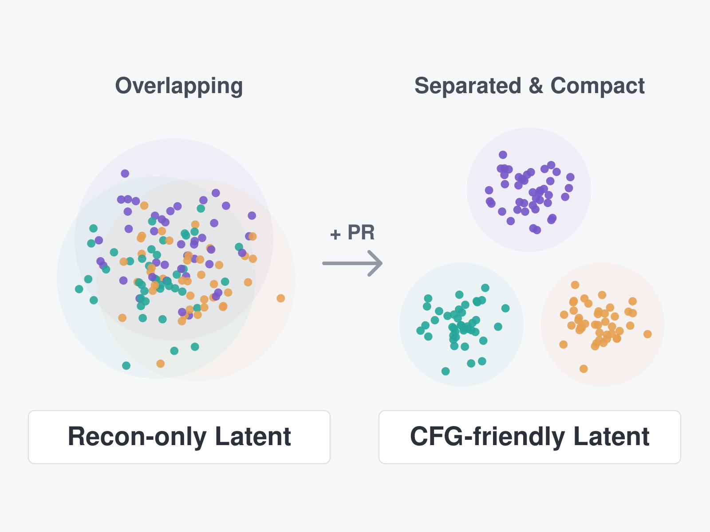
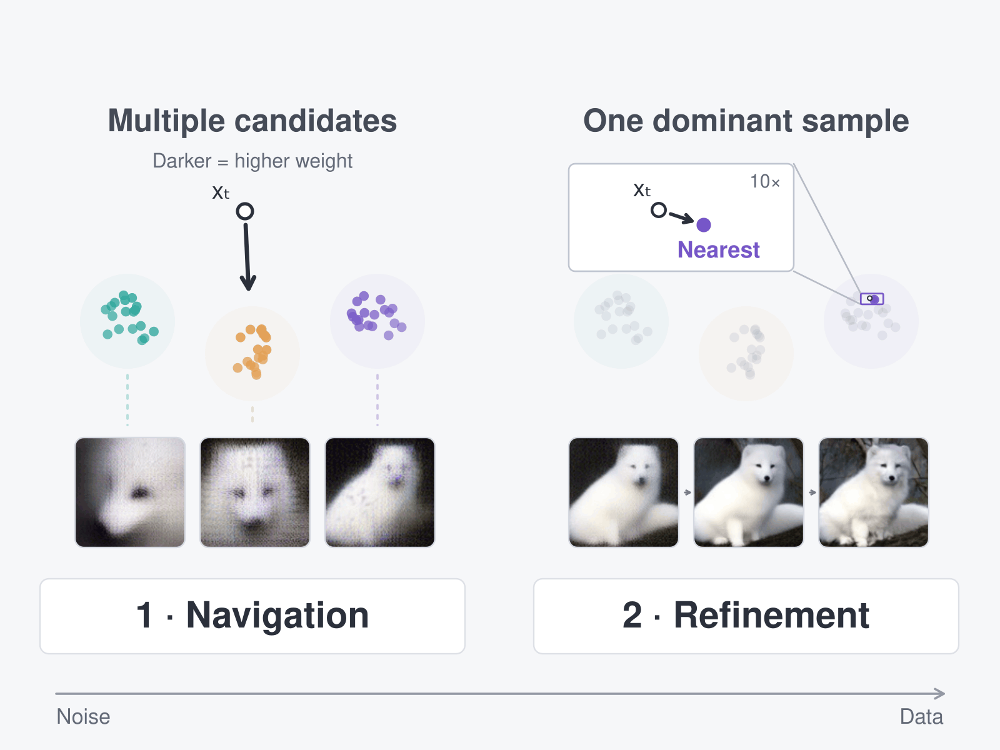
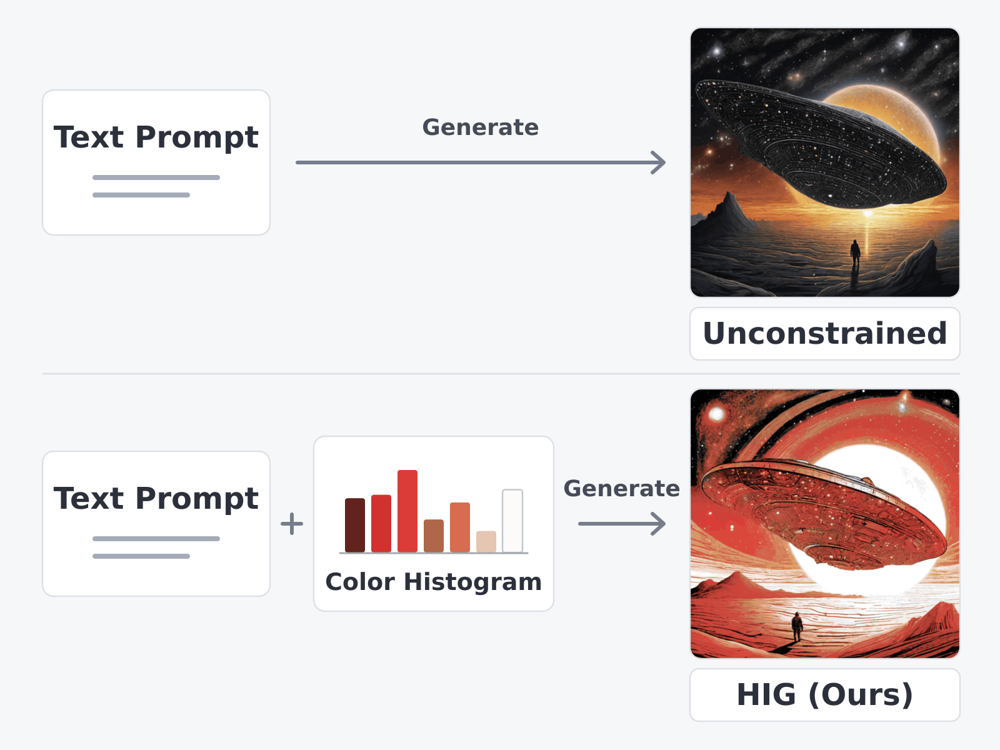

Learning to Be Guided: Shaping Latent Geometry for Classifier-Free Guidance
arXiv Preprint
We regularize the class geometry of latent spaces to make them work better with classifier-free guidance.
Also known as Hammond / 哈蒙德
Computer Science Ph.D. Student @ NYU
I’m a Computer Science Ph.D. student at NYU Shanghai and NYU Tandon, advised by Professor Hongyi Wen. I also work closely with Professor Shengjie Wang. Prior to that, I received my B.S. in Computer Science from NYU Shanghai in 2023, where I was advised by Professor Li Guo.
I’m broadly interested in generative modeling and representation learning. I seek both theoretical and empirical understanding of state-of-the-art paradigms, with the goal of making them more efficient, scalable, and interpretable.
I devote one hour each week to open conversations with junior students. Please feel free to email me if you’d like to discuss research or life. We are entering an era of rapid change, where many of us are driven by achievement and busy rushing forward. May you all find the simple joys of being human: savoring the process, discovering what you love, and having some fun along the way. 😊

arXiv Preprint
We regularize the class geometry of latent spaces to make them work better with classifier-free guidance.

CVPR 2026 (Findings)
We reveal flow matching’s implicit two-stage training target and how it shapes model behavior.

ECCV 2026
A training-free approach for exact control over distributional properties during diffusion sampling.
Being trusted to explain an idea or help someone find their direction is a great privilege to me. I served as a Teaching Assistant for CSCI-SHU 360: Machine Learning for two wonderful semesters in Fall 2024 and Spring 2025. Beyond the classroom, I have mentored undergraduate and K-12 students through tech bootcamps, research projects, and course tutoring.
Disclaimer: I remain a beginner in most of the hobbies I pursue, but I always have fun! 😎
I am deeply curious about fundamental questions of how we exist and relate to the world. This curiosity has led me to explore philosophy (e.g., Confucianism, Buddhism, and Taoism), esoteric practices (e.g., fortune-telling, divination, and meditation), and various spirituality. I also enjoy connecting with people, so I try to learn a few greetings in as many languages as I can. I enjoy most sports, but perhaps because I am a bit lazy, my favorite remains city walks. I love music too, though I know little about music theory; I have learned a bit in guitar and guqin.
I’ve been fortunate to meet many awesome friends on my journey and share a lot of amazing moments with them.
First, a shout-out to my longtime roommates:
I had a great time with my friends during undergrad, though sadly many of them don’t have homepages for me to link here:
I’ve also found many close friends during my PhD (quite a few of whom were still undergrads when we met):